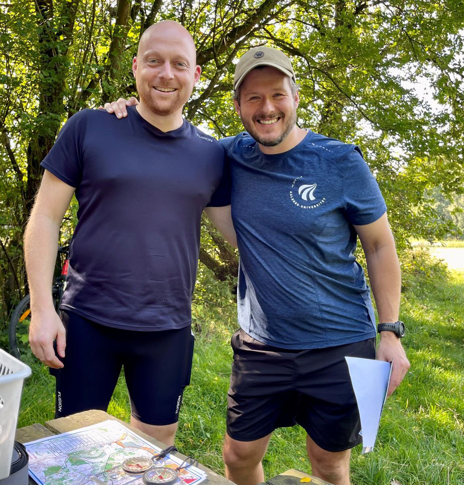
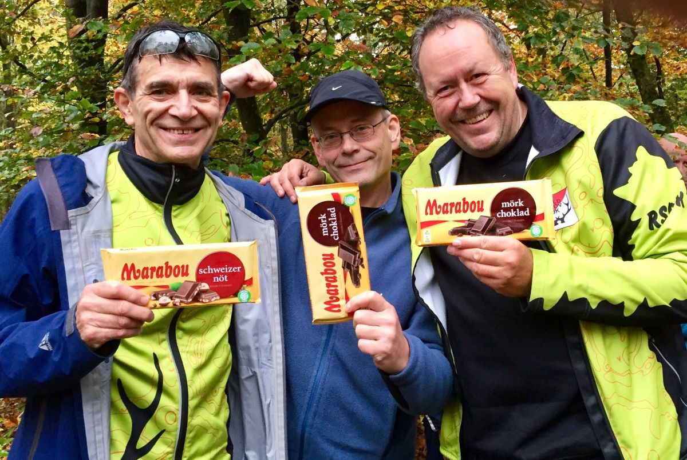

Velkommen til Rold Skov Orienteringsklub
Det er for alle også for dig og jer
Orienteringsløb(O-løb) er for alle, der har lyst til at færdes i skov og i terræn og finde vej ved hjælp af kort og kompas. Men orienteringsløb finder også sted i parker og i byer, fordi man kan navigere og finde poster overalt, blot der er lavet et kort over området. Deltagere i o-løb findes i alle aldre – også i Rold Skov Orienteringsklub(RSOK). Ganske små børn, der følges med forældre eller bedsteforældre, eller som selv løber en bane, når de er klar hertil. I princippet er der ingen øvre aldersgrænse, for så længe man kan færdes rundt på banen, kan man deltage. Banerne findes nemlig i aldersintervallet drenge/piger indtil til 10 år og helt op til herre/damer +90 år. Afpasset efter alder, køn og sværhedsgrad, så alle kan være med, uanset hvilket niveau man er på, eller hvor dygtig eller erfaren man er med kortet i hånden.
Hvad tilbyder vi?
Ofte forkorter vi klubbens navn til Rold Skov OK eller blot RSOK. Det samme gælder orienteringsløb, som vi ofte kalder o-løb. Klubben tæller knapt 200 medlemmer, der dyrker orienteringsløb på forskellige niveauer - lige fra elite til motion for alle aldre. Sidstnævnte i nøjagtigt det tempo du har lyst til, hvad enten det er i fuldt firspring eller i gang.
Vi laver et mindre såkaldt træningsløb hver lørdag – oftest i Rold Skov, børne- og ungdomstræning hver tirsdag, mulighed for at deltage i åbne konkurrenceløb om søndagen, et ugentligt nyhedsbrev med informationer om kommende aktiviteter, forskellige sociale begivenhed og klubarrangementer, mulighed for at hjælpe med ved de løbsarrangementer klubben står for – og især et åbent, inkluderende fællesskab, hvor der er plads til alle på det niveau, man selv ønsker.
Læs mere herom under Træningsløb
Her er den åbenlyse fordel, at alle i familien ”går til det samme”, og alle får oplevelser afpasset efter alder, lyst og behov.
For hjerte og hjerne
O-løb er motion for hjerte og hjerne. Fordi man både udfordrer sig selv fysisk men også mentalt, når det gælder om at læse kortet og finde posterne på ens bane. Posterne er altid markeret med en rød/hvid skærm i terrænet, og der er ingen opgaver eller spørgsmål, man skal svare på undervejs. Man deltager som oftest individuelt, men til klubløb og mindre træningsløb kan man sagtens følges med andre. Engang imellem arrangeres stafetorientering med 2-3 deltagere på hvert hold. O-løb er både naturoplevelser på skovveje og stier men også i skovbunden udenfor stierne. Det er masser af frisk luft og motion, og det er et forum med aktive og engagerede deltagere, der nyder samværet med andre, naturen på alle årstider og nyder udfordringerne i orienteringen i eget tempo og på det niveau, som den enkelte nu har lyst til at udfolde sig i. Det er for børn og unge, familier med børn, seniorer og pensionister – vi byder nemlig alle velkommen til verdens bedste idræt, der forener fysiske udfoldelser med natur, frisk luft og mentale udfordringer med at lave det bedste vejvalg og selvfølgelig finde posterne på ens bane. Vi bruger kort og et kompas, men ikke GPS eller andre tekniske hjælpemidler undervejs på banen – kun til at holde styr på tiden og måske se hvor man har været i skoven efter løbet.
Lidt om klubbens historie
RSOK er en orienteringsklub, som har eksisteret siden vinteren 1942, hvor klubben blev stiftet med især vinteraktiviteter som skiløb og skøjtning på programmet. Det hører også med til klubbens historie, at flere af dem, som dengang stiftede klubben, var aktive i modstandsbevægelsen, og derfor brugte idrætsaktiviteterne som dække for modstanden mod besættelsesmagten. Sidenhen både voksede og faldt antallet af medlemmer. Sidstnævnte så meget at klubben faktisk blev genstartet ikke mindre end 2 gange, men det ændrede nu ikke på, at vi fejrede klubbens 75-års jubilæum i 2017 idet den på intet tidspunkt har været helt nedlagt. Så vi er både en klub, der har rundet de 80 år, men også en klub med masser af fornyelse og nye moderne idéer.